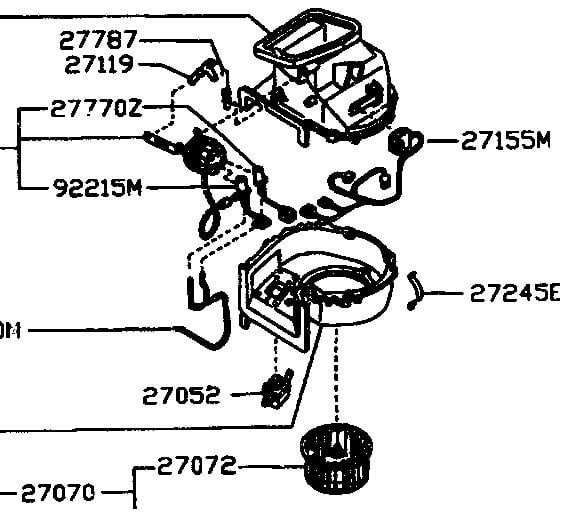

-
Hey, just this season my blower decided it doesn't want to blow anymore. I have a 89' GLL that I did a turbo engine swap on. The blower worked last year with the Turbo engine so I know it's not something from the swap. As you know I have the auto climate control jazz and I'm worried I have a big mess ahead of me. So far I checked the 3 fuses and relay and they all check out fine. I checked for voltage at the blower with the fan on HI, MED, and LOW and I get no voltage at all at the blower. When I select DEFR, DEMIST or ECON I can hear the vents in the dash moving around. I pulled the control unit out and reseated all the connectors and wiggled everything around to be sure there are no loosies back there, still nothing. All tests were performed with the car running at operating temp cause I know the blower doesn't kick on until the coolant is hot enough. Are the control units known to fail like this or what? I'm thinking of just running a 12V toggle switch to the blower, that kosher? Anything else I can try? Thanks for any help.
Play: '89 Z31 Turbo.
Blowing away: '71 S30 w/Sr20det. -
Re: Typical Blower Problem in Z31's?
Same thing happened to the Auto Climate control on my AE.
Theres a Gold rectangular box bolted to the bottom of the blower. This is what they call your fan control amplifier, I think this is essentially equivalent to the resistor box on any other normal car. When mine went, all fan controls ceased to function.
I replaced it with a unit from a manual controlled car and only had high fan speeds for a year or so (better than nothing). Then just last month i bought a parts car with the proper fan control amplifier, stuck it in. and it works perfectly !

In the above picture, it's the part labeled as 27052
-
Re: Typical Blower Problem in Z31's?
Hey, Thanks a lot! I saw that little box along with one of the tinny fan sensors still kicking down there. What a mess of crap. I noted 8 temp sensors in all to get the auto climate control to work. I just searched for that part 27052 and Courtesy Nissan has it for $120. (Ouch). Which manual type one did you use before you got the correct one? I think I may take the cheaper route this time around. Thanks!
Play: '89 Z31 Turbo.
Blowing away: '71 S30 w/Sr20det. -
Re: Typical Blower Problem in Z31's?
I bought the other box from the wreckers for 30 bucks.
It was out of an 85 NA car that had the manual controls and not the auto controls. Basically to get anything to come out of the vents you had to push the "HI" button, but the temp range still worked fine.
I'm not sure how much they changed in the 87-89 cars in the climate control though, so i'm not sure if you will end up with the same results.
I was quoted 450 CDN from a local nissan dealer for the part. So 120 bucks is a bargain !
I ended up buying a whole car for 300.... go nissan.... -
Re: Typical Blower Problem in Z31's?
I have one of these used if interested. Its also a digital unit so you should regain alll fan speeds. Just pm me. -
Re: Typical Blower Problem in Z31's?
at least you dont have a vac issue or at least i think thats what it is. wont allow me to move from defrost lol84_z31 wrote: Same thing happened to the Auto Climate control on my AE.
Theres a Gold rectangular box bolted to the bottom of the blower. This is what they call your fan control amplifier, I think this is essentially equivalent to the resistor box on any other normal car. When mine went, all fan controls ceased to function.
I replaced it with a unit from a manual controlled car and only had high fan speeds for a year or so (better than nothing). Then just last month i bought a parts car with the proper fan control amplifier, stuck it in. and it works perfectly !
In the above picture, it's the part labeled as 27052
http://www.neospeed.freeforums.org
1985 300zx n/aRegretfully Retired
1997 240sx srdetSadfully Sold
(!Attention!) If you have an 85 - 89 thats not stripped out a shell rolling body preferred contact me at330 328 2789 (ask for rick) -
Re: Typical Blower Problem in Z31's?
check vacuum lines going to the engine bay and the ones under the dash (o what loads of fun you have ahead of you)
he gives me shit all the time about the money i spend on my car but he simply doenst understand what type of "high" you get from watching a stock car transform into something alive with as much emotion and feelings as any human.Originally posted by PurePontiacKid -
Re: Typical Blower Problem in Z31's?
I also have a couple blower fans from 87 and 88 cars. I have silver and black face auto climate control. also.
1988 300ZX Turbo, Shiro Special #760
1988 300ZX Turbo Automatic (wife's car)
1991 Hard-body 2WD
http://zccw.org/zccw/?page_id=1215 -
Re: Typical Blower Problem in Z31's?
If by loads of fun you mean running a switch and relay to the blower then yea, i guess.New 2 Z wrote: check vacuum lines going to the engine bay and the ones under the dash (o what loads of fun you have ahead of you)
Play: '89 Z31 Turbo.
Blowing away: '71 S30 w/Sr20det. -
Re: Typical Blower Problem in Z31's?
Thanks, I paypaled "Blown-N-Boosted" for a fan amp on Wednesday, Still waiting on a reply from him. ??reddzx wrote: I also have a couple blower fans from 87 and 88 cars. I have silver and black face auto climate control. also.
[UPDATE] Bah, when B-N-B removed the Fan amp it fell apart. He promptly refunded my money. If i don't find one by the end of the week then a 12v switch will be set in its place. Anyone?
Play: '89 Z31 Turbo.
Blowing away: '71 S30 w/Sr20det.

Copyright © 2006–. All rights reserved. Privacy Policy